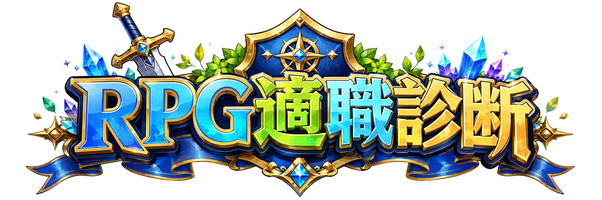
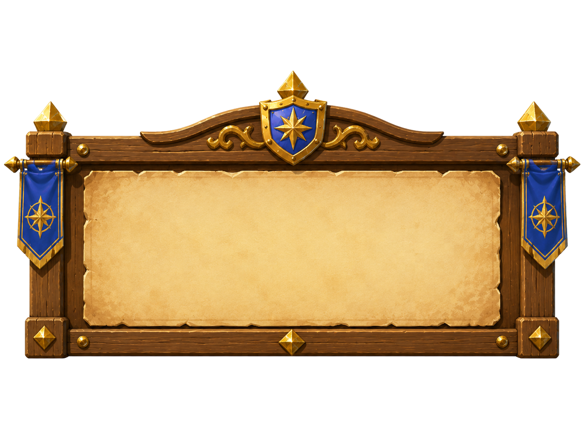
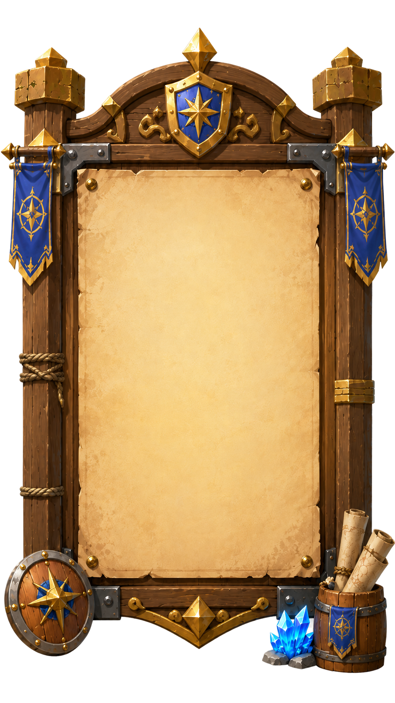

診断を始める
16タイプを見る

あなたの適職タイプは…
次のアクション
今すぐ応募する
あなたに合う求人を見る
同じタイプの社員を見る
採用サイトへ
診断の詳細を見る
あなたに合う求人
同じタイプの社員
診断の詳細
応募フォーム
お名前
必須
フリガナ
必須
メールアドレス
必須
電話番号
必須
希望ポジション
入社希望時期
志望動機
この内容で応募する
応募ありがとうございます！担当者より追ってご連絡いたします。
採用情報
募集職種
エンジニア／営業／企画・マーケティング ほか
雇用形態
正社員（中途・新卒）
勤務地
本社（リモート併用可）
給与
経験・能力を考慮の上、当社規定により決定
選考フロー
書類選考 → 面接（複数回）→ 内定
あなたのプロフィール
適職タイプ
—
強み
—
おすすめ職種
—
診断日
—
もう一度診断する
×
インタビューを見る
16タイプ一覧
戻る
ver.15